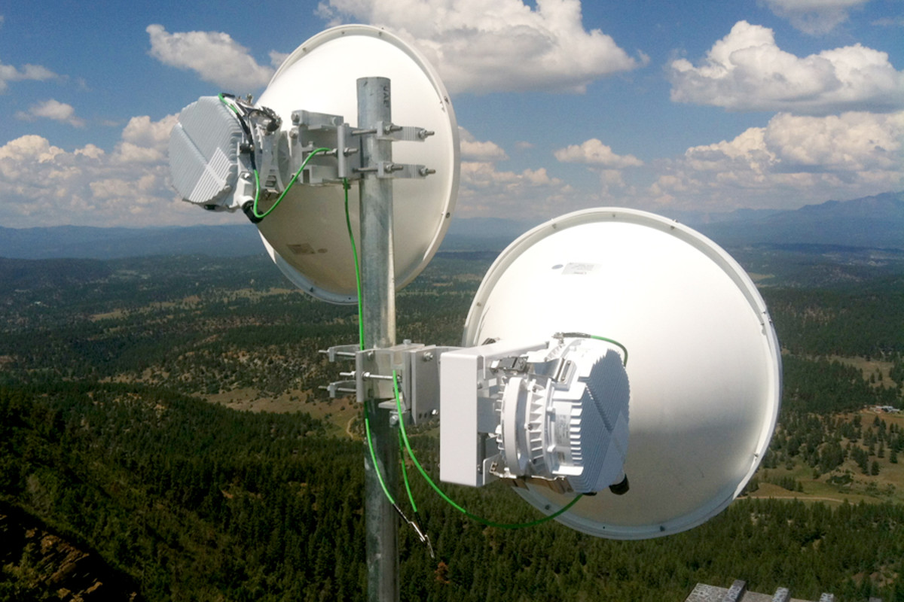

Expert Network Engineer & Infrastructure Specialist
Saya adalah seorang profesional di bidang IT Infrastructure dan Networking dengan pengalaman lebih dari 5 tahun dalam mengelola sistem komputer dan jaringan perusahaan skala industri. Memiliki keahlian mendalam dalam konfigurasi MikroTik (MTCNA Certified), manajemen keamanan jaringan menggunakan Fortinet, serta pemeliharaan infrastruktur hardware dan PABX.
Selama perjalanan karier saya, saya telah berhasil menangani berbagai proyek mulai dari instalasi jaringan dari nol, troubleshooting hardware kompleks, hingga pemeliharaan sistem transmisi radio untuk memastikan konektivitas bisnis tetap stabil. Saya sangat antusias dengan perkembangan teknologi terbaru dan berkomitmen untuk memberikan solusi teknis yang efisien bagi perusahaan.
Spesialis jaringan dengan fokus pada High-Performance Connectivity. Ahli dalam merancang infrastruktur wireless jarak jauh (PTP/PTMP) dan pembangunan sistem IT pabrik dari nol Greenfield Project. Berdedikasi pada kontrol kualitas perangkat harian untuk memastikan zero-downtime.

Instalasi link backbone menggunakan MikroTik. Optimasi link budget untuk stabilitas trafik data tinggi.
Setup total: Cabling standar industri, Rack management, hingga integrasi sistem PC & Printer siap pakai.
"Pointing wireless yang dilakukan sangat presisi. Koneksi antar gudang stabil meskipun cuaca buruk."
- Manager Operasional, PT. Prym"Sangat profesional dalam manajemen kabel. Ruang server kami sekarang sangat rapi dan mudah dimaintain."
- Lead IT, Industri ManufakturKonsultasikan kebutuhan infrastruktur IT Anda sekarang.
📧 rohmatr12@gmail.com
Chat via WhatsApp